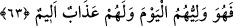

63.
Allah’a
andolsun,
senden
önceki
ümmetlere
de
(peygamberler)
göndermişizdir. Fakat şeytan onlara işlerini süslü gösterdi de (îmân etmediler). İşte
o, bugün onların velisidir. Ve onlar için elem verici bir azap vardır.
“Allah’a andolsun, senden önceki ümmetlere de” peygamberler “göndermişizdir.”
Onlar da kavimlerini Hakk’a davet etti, fakat kavimleri onlara icâbet etmedi. “Fakat
şeytan onlara” küfrü ve peygamberleri yalanlamak gibi çirkin “işlerini süslü gösterdi
de” onlar bu fiillere ısrarla dalarak îmân etmediler.
“İşte o,” yâni şeytan, “bugün onların velisidir.” O ne kötü bir yaran ve dosttur.
“Bugün”, şeytanın onlara yaptıklarını güzel gösterdiği gün demektir. Ya da şeytan
onları dünyâda aldatarak dalâlete sürüklemiştir. O zaman “bugün” dünyâ zamanından
veya kıyâmet gününden ibârettir. Aslında o kendine yardım etmekten bile âcizdir,
başkasına nasıl yardımcı olsun?! Bu, gelecek zamanın hikâyesidir ve “cehennemde azab
gördükleri halde” demektir.
Fakir (Bursevî) der ki: Öyle görünüyor ki “bugün” ile kasdedilen Peygamber (s.a.)’in
günü ve asrıdır. Bu durumda “onların” zamir ile kasdedilen Peygamberimiz’e muâsır
kâfirlerden olan zürriyetleri ve nesilleridir.
“Ve onlar için” âhirette “elem verici bir azap” ateş/cehennem azâbı “vardır.”
[156]. Münâvi, VI, 11
[157]. Buhâri, Zekat, 10; Müslim, Birr, 147; Tirmîzî, Birr, 13; Müsned, VI, 33, 88,
166
[158]. Münâvi, VI, 430